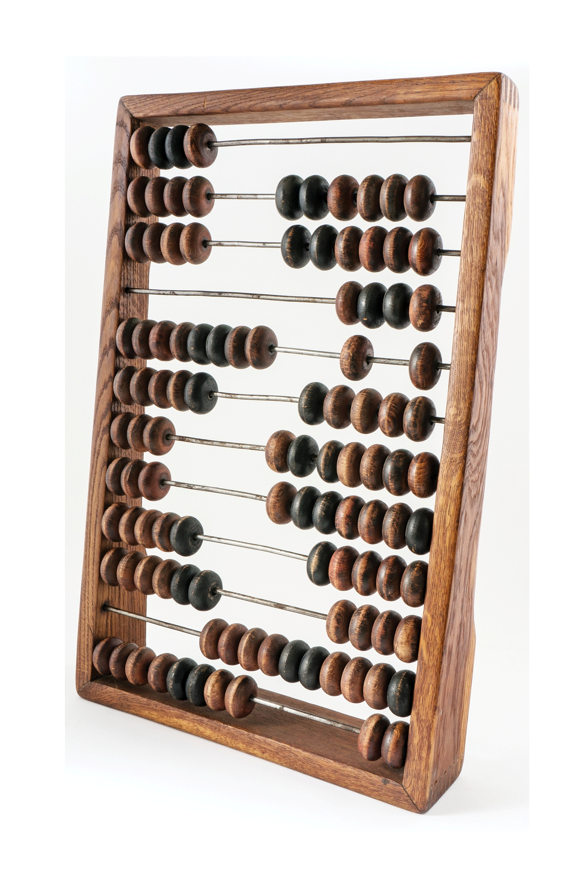
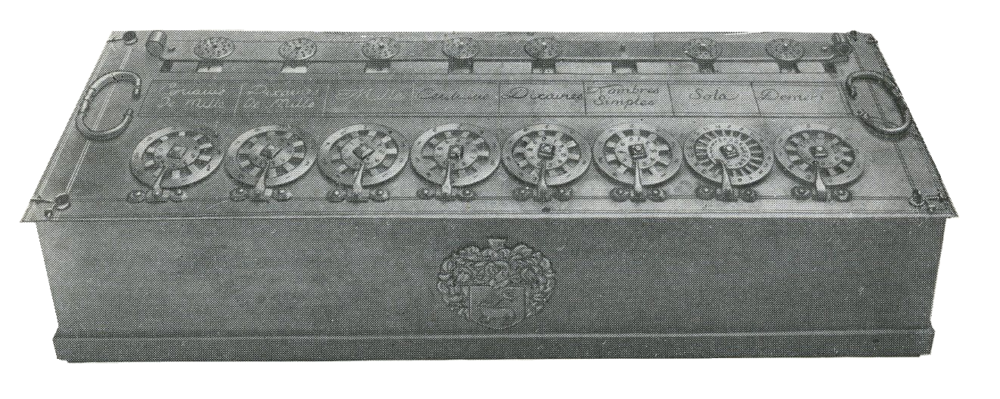

Calculatorul
Un calculator, numit si sistem de calcul sau computer este o masina de prelucrat date si informatii conform unei liste de instructiuni numita program.
In 1947, John von Neumann a enuntat principiile esentiale de functionare acalculatoarelor, aplicate si astazi in constructia sistemelor de calcul ( arhitectura von Neumann).
Primul astfel de sistem, de dimensiunile unei sali de curs, era foarte departe de performantele computerelor de astazi. Ceea ce se poate remarca este viteza cu care s-au dezvoltat caracteristicile fizice si performantele sistemelor de calcul, inregistrand, faraindoiala, cea mai rapida evolutie dintre industriile si tehnologiile secolului XX.
In evolutia cronologica a calculatoarelor electronice, teoreticienii au stabilit cinci etape, numite generatii de calculatoare.
Exemple de calculatoare mecanice inainte de inventarea calculatoarelor moderne:
- Abacul 
- Calculatorul lui Pascal (Pascaline) 
- Masina diferentiala